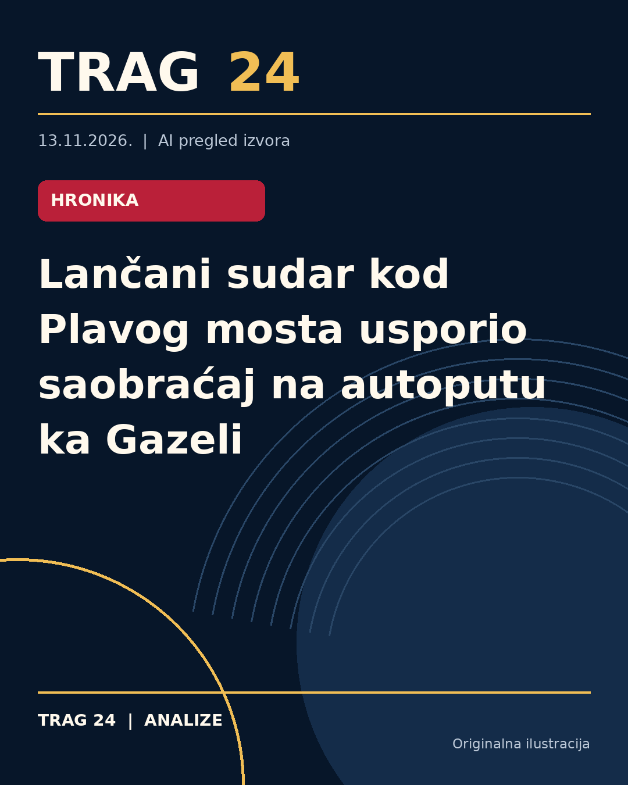

Lančani sudar kod Plavog mosta usporio saobraćaj na autoputu ka Gazeli

ŠTA SE DOGODILO
Oko 17 časova kod Plavog mosta, na autoputu ka mostu Gazela, došlo je do lančanog sudara u kome je učestvovalo nekoliko vozila. Nesreća se dogodila neposredno pre Plavog mosta i na skretanju za Šumice.
HRONOLOGIJA
Lančani sudar se dogodio u popodnevnim časovima, oko 17 sati. Nakon nesreće, saobraćaj u smeru ka gradu usporen je zbog formiranih gužvi. Vozačima koji žele da idu prema Šumicama i ka gradu savetuju se obilazni pravci, kao i isključenje sa autoputa kod mesta Lasta.
ŠTA NAVODE IZVORI
Kurir i Novosti prenose da je saobraćaj usporen i da su formirane velike gužve u smeru ka Gazeli. Oba izvora savetuju vozačima da koriste alternativne pravce i da se isključe kod Laste. Izveštaji ne navode detalje o broju učesnika ili eventualnim povredama.
ŠTA JE POTVRĐENO
Potvrđeno je da je došlo do lančanog sudara kod Plavog mosta i da je saobraćaj u smeru ka gradu usporen. Učestvovalo je više vozila. Vozači se upućuju na obilazne pravce, posebno skretanje na Lasta, radi izbegavanja zastoja.
ŠTA NIJE POTVRĐENO
Nema dostupnih informacija o uzrocima nesreće, stepenu povreda učesnika ili tačnom broju automobila uključenih u sudar. Takođe, nije poznato koliko je trajala obustava ili da li je bilo intervencija hitnih službi.
ŠTA OSTАJE OTVORENO: Ostaje nejasno kako je tačno došlo do lančanog sudara, da li su učesnici imali povrede i kakve mere su preduzete nakon nesreće. Takođe nije poznato kada će saobraćaj u potpunosti biti normalizovan i da li su u toku dodatne kontrole ili sanacije na licu mesta.
Izvori
- https://www.kurir.rs/vesti/beograd/10161542/lancani-sudar-plavi-most-autoput-guzve
- https://www.novosti.rs/beograd/vesti/1670905/lancani-sudar-paralisao-deo-auto-puta-beogradu-kolone-kod-plavog-mosta-smeru-gazeli-koristite-alternativni-pravac-kod-laste
Ova analiza je pripremljena uz pomoć veštačke inteligencije na osnovu javno dostupnih izvora. Navodi izvora nisu nužno nezavisno potvrđeni.